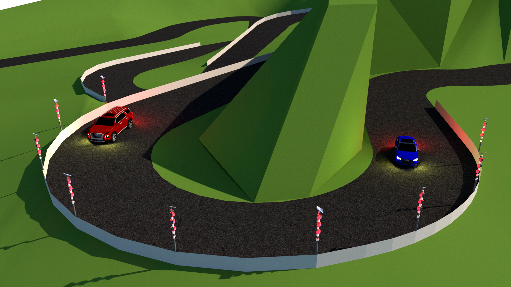

Projelerim
Aklımdaki Bilgisyar Web Sitesi

Takım arkadaşlarımla birlikte grup ödevi kapsamında geliştirdiğimiz bu proje, kullanıcıların ihtiyaçlarına göre en uygun bilgisayarı seçmelerine yardımcı olmayı amaçlıyor. Siteye giren kullanıcılar, birkaç basit soruya cevap vererek kullanım amaçlarını, bütçelerini ve teknik tercihlerini belirtirler. Bu bilgilere dayanarak, sistem onlara en iyi bilgisayar seçeneklerini önerir. Bu projeyle, karmaşık bilgisayar seçimi sürecini basitleştiriyor ve doğru kararı hızla vermelerine destek oluyoruz.
Web Sitesini Ziyaret Et
Teknik Servis Web Sitesi

Oyun konsolları için teknik destek sunan bir firma için hazırladığım bu web sitesi, kullanıcıların PlayStation tamiri ve bakımı konularında hızlı ve güvenilir çözümlere ulaşmalarını sağlıyor. Sitede sorun tespiti, detaylı temizlik, kontrolcü ve konsol tamiri gibi hizmet seçenekleri yer almakta, müşteriler taleplerini kolayca oluşturabilmektedir. Ayrıca, sıkça sorulan sorular bölümüyle kullanıcıların en çok merak ettiği konulara yanıt sunulmaktadır.
Web Sitesini Ziyaret Et
Restoran Web Sitesi
Turizm bölgesinde bulunan bir restoran için hazırladığım bu web sitesi, kullanıcıların menüyü kolayca inceleyebilmelerini sağlamak için tasarlandı. Ana sayfada dil seçimi sunulmakta, böylece Türkçe ve İngilizce seçenekleri ile yerli ve yabancı müşterilere hitap edilebilmektedir. Menünün kategorilere ayrılması ve görsellerle desteklenmesi sayesinde kullanıcılar, restoranın sunduğu lezzetleri rahatlıkla keşfedebilir.
Web Sitesini Ziyaret Et
Akıllı Viraj ve Uyarı Sistemi

Geliştirdiğim Akıllı Viraj ve Uyarı Sistemi projesi, görüşün düşük olduğu keskin virajlar, rampalar ve sisli yol bölümlerinde sürücü güvenliğini artırmak amacıyla geliştirilmiştir. Proje, ESP32 tabanlı radar ve ışıklı uyarı direkleriyle araçları tespit ederek sürücüleri uyarır ve güvenli sürüş koşulları sağlar. Modüler yapıya sahip direkler, kablosuz haberleşme sayesinde birbirleriyle organize çalışır ve kaza durumunda farklı ışıklarla uyarılar sağlar.
Görüntü İşleme Destekli Ağır Vasıta Araç Güvenlik Sistemi
Geliştirdiğim bu proje, görüntü işleme ve yapay zeka teknolojilerini kullanarak ağır vasıta araçlarının güvenliğini artırmayı amaçlıyor. Sollama, kör nokta tespiti ve arkadan çarpma gibi durumlarda sürücülere görsel ve işitsel uyarılar sağlayarak kaza riskini azaltmayı hedefliyor. Ayrıca, mobil uygulama desteğiyle park halindeyken araç çevresindeki güvenliği anlık olarak izleme imkânı sunuyor. Bu sistem, ağır vasıta araç güvenliğine yenilikçi bir çözüm getirmeyi amaçlayarak trafik kazalarının önlenmesine katkı sağlamayı hedefliyor.
Emirhan AŞIK Kişisel Pörtfoy Web Sitesi
Designed by ASTEK